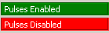

In cazul unei conexiuni active (in modul Online), sunt afisate date referitoare la starea Axei sau Canalului NC.


| Grup Canal: | |||
| Numar Canal Utilizator... |
Folositi tastele directionale (sagetile Sus/Jos) de pe tastatura | Selectati numarul Canalului. Functia este dezactivata in cazul in care optiunea 'Act.Canal / Link Channel' este bifata in grupul 'Axa'. | |
 |
Stare Canal NC -> PLC |
DBch.DBX35.5 = Activ DBch.DBX35.6 = Intrerupt DBch.DBX35.7 = Reset DBch = DB[20 + Numar Canal] Exemplu: DB21 = Canal 1 |
Stare Canal: Activ: Canalul este Activ, un Program Piesa ruleaza (este executat) sau o axa se deplaseaza; Intrerupt: Canalul este intrerupt de: - DBch.DBX7.3 (NC Stop) - DBch.DBX7.4 (NC Stop axe plus arbori) - DBch.DBX7.2 (NC Stop la sfarsitul frazei) - M00 sau M01 programat - Mod Fraza-cu-fraza (Single-block mode) Reset: Canalul este in mod Reset, nu este activa nici o actiune in Canal; |
 |
Stare Program NC -> PLC |
DBch.DBX35.0 = Ruleaza DBch.DBX35.1 = In asteptare DBch.DBX35.2 = Oprit DBch.DBX35.3 = Intrerupt DBch.DBX35.4 = Anulat DBch = DB[20 + Numar Canal] Exemplu: DB21 = Canal 1 |
Stare Program: Ruleaza: DBX35.0: Programul piesa a fost lansat in executie cu semnalul de interfata DBch.DBX7.1 (NC Start) si este in executie (ruleaza). In asteptare: DBX35.1: Programul piesa aflat in executie asteapta in urma unei comenzi WAIT_M sau WAIT_E programate intr-o fraza NC. Oprit: DBX35.2: Executia programului piesa a fost oprita de: - DBch.DBX7.3 (NC Stop) - DBch.DBX7.4 (NC Stop axe plus arbori) - DBch.DBX7.2 (NC Stop la sfarsitul frazei) - M00 sau M01 programat - Mod Fraza-cu-fraza (Single-block mode) Intrerupt: DBX35.3: La schimbarea modului de operare din AUTOMATIC sau MDI (cu executia programului piesa oprita) in JOG, starea executiei programului se modifica in "Intrerupt". Anulat: DBX35.4: Nici un program piesa nu ruleaza in Canal; executia programului piesa nu a fost pornita sau a fost incheiata cu M02/M30/RET/etc sau a fost anulata cu Reset. |
 |
Canal 'Ready' NC -> PLC |
DBch.DBX36.5 DBch = DB[20 + Numar Canal] Exemplu: DB21 = Canal 1 |
Canalul este pregatit: 1 = OK: Canalul este pregatit pentru procesarea din programul piesa a axelor masina, axelor geometrice si axelor de pozitionare. 0 = NO: Canalul nu este pregatit pentru procesarea din programul piesa a axelor masina, axelor geometrice si axelor de pozitionare. |
 |
Alarma Canal NC NC -> PLC |
DBch.DBX36.6 DBch = DB[20 + Numar Canal] Exemplu: DB21 = Canal 1 |
O alarma NCK specifica unui canal este activa: 0 = NU: Nici o alarma NCK (specifica unui canal) nu este activa pentru acest canal. 1 = DA: Cel putin o alarma NCK (specifica unui canal) este activa pentru acest canal. |
| Alarma NC NC -> PLC |
DBch.DBX36.7 DBch = DB[20 + Numar Canal] Exemplu: DB21 = Canal 1 |
O alarma NCK cu oprire preprocesare este activa: 0 = NU: In acest canal nu este activa nici o alarma care sa cauzeze stop preprocesare. 1 = DA: Cel putin o alarma NCK - ce cauzeaza o oprire a preprocesarii programului ce ruleaza in acest canal - este activa | |
 |
Reset Utilizator->PLC |
DBch.DBX7.7 | La apasare (Click): un semnal de Reset este transmis catre Canal prin intermediul bitului DBch.DBX7.7 |
 |
Dezactivare Avans: PLC -> NC |
DBch.DBX6.0 DBch = DB[20 + Numar Canal] Exemplu: DB21 = Canal 1 |
Dezactivare avans (Feed disable): 0 = NU: (Avansuri active) Avansurile sunt active pentru toate axele din acest canal. Daca pentru o axa sau grup de axe din acest canal este prezenta o cerere de deplasare (travel request) (sau comanda de deplasare / "travel command") iar acest semnal este 0 (inactiv) deplasarea este efectuata imediat.. 1 = DA: (Avansuri dezactivate) Semnalul este activ pentru un canal in toate modurile de operare. Semnalul dezactiveaza avansurile pentru toate axele (geometrice sau sincrone) ce interpoleaza una fata de alta cat timp G33 (filetare / thread) nu este activ. Toate axele sunt aduse la stationare pastrand conturul programat. Atunci cand dezactivarea avansurilor este anulata (semnal 0 -> permitere avansuri), executia programului piesa este reluata/continuata. Semnalul declanseaza o dezactivare a avansurilor pentru toate axele de pozitionare. Toate axele aflate in miscare/deplasare sunt aduse la stationare cu oprire controlata (cu rampa de decelerare). Nu este emisa nici o alarma. Controlul pozitiei este mentinut, respectiv eroarea de urmarire este anulata. Daca o cerere de deplasare este emisa pentru o axa din canal cat timp semnalul 'Dezactivare avans' / 'Feed disable' este activ, cererea de deplasare este memorata. Deplasarea este efectuata imediat ce semnalul 'Dezactivare avans' / 'Feed disable' este anulat. Daca axa respectiva se afla in interpolare cu alte axe, anularea avansului se aplica si acestora. Nota: In mod uzual, semnalul 'Dezactivare avans' / 'Feed disable' este generat de blocul FC10 (bloc standard din biblioteca de functii 'Siemens ToolBox Library') in programul PLC. |
 |
Dezactivare Citire Fraza: PLC -> NC |
DBch.DBX6.1 DBch = DB[20 + Numar Canal] Exemplu: DB21 = Canal 1 |
Dezactivare Citire Fraza / Read In Disable: 0 = NU: (Citire fraza permisa / Read-In Enabled) Sistemul citeste si executa urmatoarele fraze/linii de program piesa preprocesate. 1 = DA: (Citire fraza dezactivata / Read-In Disabled) Sistemul nu citeste si nu executa urmatoarele fraze/linii de program piesa preprocesate. Nota: Semnalul este ativ doar in modurile AUTOMATIC si MDI. Nota: In mod uzual, semnalul 'Dezactivare avans' / 'Feed disable' este generat de blocul FC10 (bloc standard din biblioteca de functii 'Siemens ToolBox Library') in programul PLC. |
 |
Anulare DTG: PLC -> NC |
DBch.DBX6.2 DBch = DB[20 + Numar Canal] Exemplu: DB21 = Canal 1 |
Anulare 'distanta ramasa de parcurs'/'distance-to-go' (pe canal) 0 = NU: Nicu un efect 1 = DA: Anulare 'distanta ramasa de parcurs'/'distance-to-go' (pe canal): Semnalul de interfata 'Anulare 'distanta ramasa de parcurs'/'distance-to-go' (pe canal) pentru axele de interpolare este activ doar in modul AUTOMATIC. Frontul crescator al acestui semnal are efect doar asupra axelor ce sunt implicate in grupari geometrice (interpolari). Acestea sunt oprite cu rampa de decelerare iar distanta restanta ramasa de parcurs este anulata (prescrisa este setata cu valoarea actuala de pozitie). O eventuala eroare de urmarire este corectata. Apoi este declansata executia urmatoarei fraze de program piesa. Semnalul de interfata Anulare 'distanta ramasa de parcurs'/'distance-to-go' (pe canal) este ignorat de axele de pozitionare si relevant doar pentru axele de interpolare. Remarca: Semnalul de interfata Anulare 'distanta ramasa de parcurs'/'distance-to-go' (pe canal) nu influenteaza timpul de asteptare actual pentru o fraza de program piesa cu temporizare (dwell time) (de ex. G04). Semnal irelevant pentru axele de Pozitionare Exemplu de aplicatie: incheierea unei deplasari functie de un semnal extern (de exemplu un palpator de masura) Corespunzator cu ... DBax.DBX2.2 ('Anulare 'distanta ramasa de parcurs' /'delete distance-to-go' (pe axa)) |
 |
Dezactivare NC-Start: PLC -> NC |
DBch.DBX7.0 DBch = DB[20 + Numar Canal] Exemplu: DB21 = Canal 1 |
Dezactivare NC-Start / NC-Start disable: 0 = NU: (Permitere NC-Start) Dezactivarea NC Start nu este activa. 1 = DA: (Dezactivare NC-Start) Dezactivarea NC Start impiedica inceperea executiei unui program piesa prin intermediul semnalului NC START DBch.DBX7.1 (NC Start) == 1. |
 |
Timp ciclu scanare Info |
Intervalul de timp in care a fost realizata ultima citire de date din PLC |
| Grup 1 Axa: | |||
 |
Numar axa Utilizator... |
Folositi tastele directionale (sagetile Sus/Jos) de pe tastatura | Selectati numarul Axei. |
| Numar Canal NC -> PLC |
DBax.DBX68.0 = bit 0 DBax.DBX68.1 = bit 1 DBax.DBX68.2 = bit 2 DBax.DBX68.3 = bit 3 DBax = DB[30 + Numar Axa] Exemplu: DB31 = Axa 1 |
Alocare canal in NC pentru axa/arbore: Numarul Canalului NC caruia ii este alocata axa (arborele) (codificare binara). Info de la NC catre PLC. Pentru axele ce sunt alocate in mai mult de 1 canal, acesta este numarul canalului in care este alocata axa in acest moment. | |
| Actualizare Canal / Link Channel Utilizator |
 Actualizare Canal Actualizare CanalNeactualizare Canal |
Daca optiunea 'Act.Chan'/'Link Channel' este selectata, numarul canalului din grupul din stanga va fi setat automat cu numarul canalului in care este alocata axa... =>
| |
 |
Tip Axa: Axa/Arbore NC->PLC |
DBax.DBX60.0 DBax = DB[30 + Numar Axa] Exemplu: DB31 = Axa 1 |
Tip Axa: 0 = Axa 1 = Arbore In cazul unei erori de citire pentru datele de axa (de exemplu numarul axei este mai mare decat numarul axelor din sistem) aici este afisat mesajul 'Axa: eroare' |
 |
Override Axa: PLC->NC |
DBax.DBB0 DBax.DBB19 DBax = DB[30 + Numar Axa] Exemplu: DB31 = Axa 1 |
Nota: valoarea afisata pe ecran este calculata comform setarilor 'standard' pentru override in cod Gray Pentru Axe, valoarea pentru override este setata de catre PLC catre NC in DBax.DBB0. Pentru Arbori ('Tip Axa' (DBax.DBX60.0) = 1), valoarea pentru override este setata de catre PLC catre NC in DBax.DBB19 Valori avans si avans-rapid specifice Canal [ne-implementate in Monitor5]: Channel-specific feedrate and rapid traverse [Not implemented in Monitor5] Pentru valorile de override pentru avans si avans-rapid sunt disponibile in interfata NC/PLC semnale de permitere dedicate si factori de corectie specifici: DB21, ... DBX6.7 (override avans activ) DB21, ... DBB4 (valoare override avans) DB21, ... DBX6.6 (override avans-rapid activ) DB21, ... DBB5 (valoare override avans-rapid) Factorii de calcul pentru override pot fi specificati de catre PLC fie in format binar fie in cod Gray. Formatul este setat in NC prin intermediul datelor de masina: MD12020 $MN_OVR_FEED_IS_GRAY_CODE (selector override avans contur in cod Gray / path feedrate override switch gray-coded) MD12040 $MN_OVR_RAPID_IS_GRAY_CODE (selector override avans rapid in cod Gray / rapid traverse override switch gray-coded) Override avans specific axa / Axis-specific feedrate override Pentru fiecare axa de pozitionare/interpolare, in interfata NC/PLC exista un semnal de activare si un octet/byte pentru factorul de override avans. DB31, ... DBX1.7 (activare override) DB31, ... DBB0 (valoare override) Factorii de calcul pentru override pot fi specificati de catre PLC fie in format binar fie in cod Gray. Formatul este setat in NC prin intermediul datei de masina: MD12000 $MN_OVR_AX_IS_GRAY_CODE (selector override avans axa in cod Gray / axis feedrate override switch gray-coded) Pentru codificare binara se aplica urmatoarea regula permanenta: DBB0 = 0 => 0% ... DBB0 = 200 => 200% Pentru codificare in cod Gray, valorile de override corespunzatoare pozitiilor comutatorului rotativ trebuie sa fie setate in datele de masina MD12010 $MN_OVR_ FACTOR_AX_ SPEED [n] Override Arbore Pentru fiecare arbore, in interfata NC/PLC exista un semnal de activare si un octet/byte pentru factorul de override arbore. DB31, ... DBX1.7 (activare override) DB31, ... DBB19 (valoare override arbore) Factorii de calcul pentru override pot fi specificati de catre PLC fie in format binar fie in cod Gray. Formatul este setat in NC prin intermediul datei de masina: MD12060 $MN_OVR_SPIND_IS_GRAY_CODE (selector override arbore in cod Gray / spindle override switch gray-coded) Pentru codificare binara se aplica urmatoarea regula permanenta: DBB19 = 0 => 0% ... DBB0 = 200 => 200% Pentru codificare in cod Gray, valorile de override corespunzatoare pozitiilor comutatorului rotativ trebuie sa fie setate in datele de masina MD12070 $MN_OVR_FACTOR_SPIND_SPEED [n] |
 |
Liber Impuls: PLC->NC |
DBax.DBX21.7 DBax = DB[30 + Numar Axa] Exemplu: DB31 = Axa 1 |
Liber Impuls / Pulse enable: 1 = DA: Impulsurile sunt activate/permise pentru actionarea axei. Permiterea pulsurilor are loc in actionare doar cand aceasta semnalizeaza starea de 'gata de functionare' / readiness: DBax.DBX93.5 == 1 (feedback: Drive ready) 0 = NU: Impulsurile sunt dezactivate pentru actionarea axei. Daca semnalul 'Liber Impuls' este anulat pe timpul miscarii (de ex. la Stop de Urgenta), axa/actionarea_principala nu mai este franata controlat. Axa se va opri liber pana la stationare. Corespunzator cu: DBax.DBX93.5 (feedback: Drive ready); DBax.DBX93.7 (feedback: Impulsurile sunt activate / Pulses are enabled) |
| Liber Reglare: PLC->NC |
DBax.DBX2.1 DBax = DB[30 + Numar Axa] Exemplu: DB31 = Axa 1 |
Liber Reglare / Controller enable: 1 = DA: Regulatorul este activat. Bucla de control a pozitiei este activa (inchisa) iar axa (sau actionarea principala) este controlata in bucla inchisa. Feedback: DBax.DBX61.5 = 1 (regulator de pozitie activ) Daca axa a fost referentiata inainte de resetarea acestui semnal, axa nu trebuie sa fie referentiata din nou dupa ce semnalul este setat din nou. Conditie suplimentara: Limita de frecventa a sistemului de masura activ nu trebuie sa fie depasita in acest timp. Nota Daca axa a fost deplasata din pozitie cat timp semnalul 'Liber Reglare' nu a fost setat, comportamentul axei la restabilirea semnalului 'Liber Reglare' depinde de semnalul de interfata 'mod urmarire' / 'follow-up mode': - DBax.DBX1.4 == 1 (mod urmarire / follow-up mode): Bucla de reglare a pozitiei este implementata din pozitia actuala - DBax.DBX1.4 == 0 (mod urmarire dezactivat / no follow-up mode): Bucla de reglare a pozitiei este implementata de la ultima pozitie a axei inainte dee resetarea semnalului 'Liber Reglare' 0 = NU: Regulatorul este dezactivat. Comportamentul la resetarea semnalului 'Liber Reglare' depinde de starea axei in acel moment: stationara sau in miscare: - Axa/actionare_principala stationara: - Bucla de control a pozitiei axei este deschisa (intrerupta). - In cazul DBax.DBX1.4 == 1 (mod urmarire / follow-up mode) ⇒ prescrisa de pozitie = valoarea actuala de pozitie - Semnalul 'Liber reglare' al actionarii axei este resetat - Urmatoarele semnale de interfata sunt resetate: DBax.DBX61.5 = 0 (regulator de pozitie activ); DBax.DBX61.6 = 0 (regulator de viteza activ); DBax.DBX61.7 = 0 (regulator de curent activ) - Axa/actionarea principala se afla in miscare - Axa este oprita cu stop rapid. - Alarma 21612 'Semnal VDI Liber Reglare resetat pe timpul deplasarii' / 'Controller enable VDI signal reset during motion'. - Bucla de control a pozitiei axei este deschisa (intrerupta). - Independent de semnalul de interfata DBax.DBX1.4 (mod urmarire / follow-up mode), prescrisa de pozitie este corectata la sfarsitul operatiei de franare(prescrisa pozitie = valoare actuala pozitie) iar semnalul de reactie DBax.DBX61.3 = 1 (mod urmarire / follow-up mode) este setat. - Urmatoarele semnale de interfata sunt resetate: DBax.DBX61.5 = 0 (regulator de pozitie activ); DBax.DBX61.6 = 0 (regulator de viteza activ); DBax.DBX61.7 = 0 (regulator de curent activ) | |
 |
Stop Avans / Feed Stop: PLC->NC |
DBax.DBX4.3 DBax = DB[30 + Numar Axa] Exemplu: DB31 = Axa 1 |
Stop Avans/Arbore, specific axa / Feedrate/spindle stop, axis-specific 0 = NU: Stop Avans/Arbore inactiv. 1 = DA: Stop Avans/Arbore activ. Axa - Daca semnalul de interfata este setat in timpul deplasarii axei, aceasta este franata pana la stationare cu rampa de franare caracteristica. Daa axa se afla in relatie de interpolare cu alte axe, acestea sunt deasemenea franate. - Dupa ce semnalul de interfata este resetat, deplasarea axei oprite este reluata. - Controlul pozitiei este mentinut si eroarea de urmarire este anulata. - Daca semnalul de interfata este setat si o cerere de deplasare a axei este emisa, axa nu se va deplasa. Totusi, cererea de deplasare este memorata. La resetarea semnalului de interfata, cererea de deplasare este executata imediat si axa se va deplasa. - Semnalul de interfata este activ in toate modurile de operare. Arbore (Actionare principala) - Daca semnalul de interfata este setat in timpul deplasarii arborelui, aceasta este franat pana la stationare cu rampa de franare caracteristica. Daa arborele se afla in relatie de interpolare cu alti arbori, acestia sunt deasemenea franati. - Dupa ce semnalul de interfata este resetat, deplasarea/rotirea arborelui oprit este reluata. - Pe timpul pozitionarii, controlul pozitiei este mentinut si eroarea de urmarire este anulata. - Daca semnalul de interfata este setat si o cerere de deplasare a arborelui este emisa pe timpul pozitionarii, arborele nu se va deplasa. Totusi, cererea de deplasare este memorata. La resetarea semnalului de interfata, cererea de deplasare este executata imediat si arborele se va deplasa. - Semnalul de interfata este activ in toate modurile de operare. - Semnalul de interfata nu este activ pe timpul filetarii / tarodarii (G331, G332). Nota: In mod uzual, semnalul 'Dezactivare avans' / 'Feed disable' este generat de blocul FC10 (bloc standard din biblioteca de functii 'Siemens ToolBox Library') in programul PLC. |
| Encoder 1 activ: Encoder 2 activ: PLC->NC |
DBax.DBX1.5 DBax.DBX1.6 DBax = DB[30 + Numar Axa] Exemplu: DB31 = Axa 1 |
Selectarea encoderului activ... Cazul 1: DBX1.5=0 DBX1.6 = 0: Sistemele de masura a pozitiei 1 si 2 sunt inactive ("parcare" a axei masina): - Nu mai exista o achizitie a valorii actuale. - Monitorizarea sistemelor de masura a pozitiei este dezactivata. - Urmatoarele semnale de interfata sunt resetate: – DB31, ... DBX60.4 / 5 == 0 (encoder 1/2 referentiat/sincronizat) – DB31, ... DBX61.5 (regulator pozitie activ) – DB31, ... DBX61.6 (regulator viteza activ) – DB31, ... DBX61.7 (regulator curent activ) Cazul 2: DBX1.5=1 DBX1.6 = 0: Sistemul de masura a pozitiei 1 este activ: - Controlul pozitie axei este realizat functie de sistemul de masura 1. - Functiile de monitorizare (sistem de masura, stationare, monitorizare blocare, deviere de la contur, etc.) a axei masina sunt realizate functie de sistemul de masura 1. - Daca sistemul de masura 2 exista (MD30200 $MA_NUM_ENCS == 2), valoare de pozitie masurata de acesta este achizitionata dar nu este monitorizata de nici una din functiile de mai sus. Cazul 3: DBX1.5=0 DBX1.6 = 1: Sistemul de masura a pozitiei 2 este activ: - Controlul pozitie axei este realizat functie de sistemul de masura 2. - Functiile de monitorizare (sistem de masura, stationare, monitorizare blocare, deviere de la contur, etc.) a axei masina sunt realizate functie de sistemul de masura 2. - Daca sistemul de masura 1 exista (MD30200 $MA_NUM_ENCS == 2), valoare de pozitie masurata de acesta este achizitionata dar nu este monitorizata de nici una din functiile de mai sus. Cazul 4: DBX1.5=1 DBX1.6 = 1: - Controlul pozitie axei este realizat functie de sistemul de masura 1. - Daca sistemul de masura 2 exista (MD30200 $MA_NUM_ENCS == 2), valoare de pozitie masurata de acesta este si ea achizitionata. Note - Daca semnalul de interfata referitor la sistemul de masura activ este resetat pentru o axa aflata in miscare, axa este oprita cu rampa fara anularea interna a regulatorului. - Daca un arbore controlat in viteza nu are un sistem de masura activ, semnalul de interfata "Liber Reglare" / "Controller enable" trebuie sa fie setat: DB31, ... DBX2.1 == 1 (liber reglare / controller enable) - Dupa dezactivarea starii de "parcare", sistemele de masura incrementale trebuie sa fie referentiate pentru a avea din nou starea de encoder "referentiat". - Daca starea "parcata" este activa, urmatorul semnal de interfata este ignorat la NC start pentru aceasta axa: DB31, ... DBX60.4 / 5 (referentiat/sincronizat 1/ 2). | |
| Encoder 1 referentiat: Encoder 2 referentiat: PLC->NC |
DBax.DBX60.4 DBax.DBX60.5 DBax = DB[30 + Numar Axa] Exemplu: DB31 = Axa 1 |
Encoder Referentiat... Encoder 1: DBX60.4: REF: Stare semnal 1: Sistemul 1 de masura a pozitiei este referentiat/sincronizat. N_Ref: Stare Semnal 0: Sistemul 1 de masura a pozitiei nu este referentiat/sincronizat. Encoder 2: DBX60.5: REF: Stare semnal 1: Sistemul 2 de masura a pozitiei este referentiat/sincronizat. N_Ref: Stare Semnal 0: Sistemul 2 de masura a pozitiei nu este referentiat/sincronizat. | |
 |
Dezactivare Taste Deplasare: PLC->NC |
DBax.DBX4.4 DBax = DB[30 + Numar Axa] Exemplu: DB31 = Axa 1 |
Dezactivare Taste Deplasare: 1 = DA: Tastele de deplasare "Plus" si "Minus" sunt blocate. 0 = NU: Tastele de deplasare "Plus" si "Minus" sunt active. Corespunzator cu: DBax.DBX4.6 / DBax.DBX4.7 (tastele de deplasare "Plus" / "Minus") |
 |
Anulare distanta de parcurs / Delete Distance to Go: PLC->NC |
DBax.DBX2.2 DBax = DB[30 + Numar Axa] Exemplu: DB31 = Axa 1 |
Anulare 'distanta ramasa de parcurs' / Delete Distance to Go: [Del DTG] Puls/Tranzitie 0->1: - Axa: Este solicitata o anulare a distantei de parcurs restante. - Arbore: Este solicitat un Reset. Puls/Tranzitie 1->0: Nici un efect. Axa: Anulare 'distanta ramasa de parcurs' / Delete distance-to-go - modurile AUTOMATIC si MDI Semnalul de interfata este activ doar daca axa este deplasata ca axa de pozitionare. O axa de pozitionare este decelerata pana la stationare cu rampa de franare caracteristica. Distanta ramasa de parcurs (din fraza in curs de executie) este anulata. - mod JOG Axa este franata pana la stationare cu rampa de franare carcteristica acestei axe iar apoi o eventuala distanta restanta de parcurs este anulata. Arbore: reset - mod Control: --> Arborele este oprit --> Programul NC este executat din nou (este citita si execuatata urmatoarea fraza) --> Arborele continua sa se roteasca, de data aceasta cu urmatoarea valoare S si urmatoarea functie M programate in programul piesa NC. - Oscillation mode: --> mod Oscilatii --> Axele continua sa se deplaseze --> Programul NC continua cu gama de viteza actuala --> Arborele continua sa se roteasca cu , de data aceasta cu urmatoarea valoare S si urmatoarea functie M programate in programul piesa NC. Turatia obtinuta din aceste valori (valoarea actuala de turatie programata S si ultima gama de viteza activa) poate fi prea mare. In acest caz este setat semnalul de interfata corespunzator. DBax.DBX83.1 - Axa de pozitionare: Arborele este oprit - mod Axa: Arborele este oprit Nota: Reactia la reset a arborelui este independenta de setarile din data de masina : MD35040 $MA_SPIND_ACTIVE_AFTER_RESET Corespunzator cu: DBch.DBX6.2 (anulare 'distanta ramasa de parcurs' / delete distance-to-go) DBax.DBX83.1 (viteza programata prea mare) MD35040 $MA_SPIND_ACTIVE_AFTER_RESET (reset individual arbore / own spindle reset) |
 |
Limita Hardware: PLC->NC |
Limita -: DBax.DBX12.0 Limita +: DBax.DBX12.1 DBax = DB[30 + Numar Axa] Exemplu: DB31 = Axa 1 |
Limitatoare Hardware [Plus sau Minus]: 1 = DA: Limitator hardware ("Plus" sau "Minus") activat. Alarma 21614 "Limita Hardware -" este afisata iar axa este oprita. respectiv Alarma 21614 "Limita Hardware +" este afisata iar axa este oprita. 0 = NU: Limitatorul Hardware ("Plus" sau "Minus") nu a fost activat. Corespunzator cu: MD36600 $MA_BRAKE_MODE_CHOICE (comportament la decelerare la atingerea limitatorului hardware) |
| Grup 2 Axe: | |||||||||||||||||||||||||||||||||||||||||||||||||||||||
 |
Alarma Axiala NC -> PLC |
DBax.DBX61.1 DBax = DB[30 + Numar Axa] Exemplu: DB31 = Axa 1 |
1 = DA: Este emisa o alarma specifica de axa. Axa este franata pana la stationare functie de caracteristica de decelerare specifica. Starea axei este schimbata in "Alarma axa singulara activa" / "Single axis alarm is active". 0 = NU: Nu exista alarma specifica axa. | ||||||||||||||||||||||||||||||||||||||||||||||||||||
| Axis Gata / Ready NC -> PLC |
DBax.DBX61.2 DBax = DB[30 + Numar Axa] Exemplu: DB31 = Axa 1 |
1 = DA: Axa este pregatita / ready. 0 = NU: Axa nu este pregatita / ready. Semnalul este procesat in unitatea NCU la care este conectata actionarea corespunzatoare axei. Axa nu este pregatita (not ready), daca, pe acest NCU este afisata o alarma cu reactia sistemului "NC ..." sau "Mode group..." sau "Canal nu este pregatit (not ready)", ce implica axa respectiva. | |||||||||||||||||||||||||||||||||||||||||||||||||||||
 |
Urmarire / Follow Up NC -> PLC |
DBax.DBX61.3 DBax = DB[30 + Numar Axa] Exemplu: DB31 = Axa 1 |
1 = DA: Modul 'urmarire' / 'follow-up' este activ pentru axa/arbore. Cauze posibile: - Semnalul 'Liber Reglare' a fost resetat pentru actionarea axei. --> DBax.DBX2.1 == 0 (Liber Reglare / controller enable) –-> din cauza unei erori in regulator / unitatea de control; vedeti la "Referinte Aditionale" - Modul 'urmarire' a fost selectat: –-> DBax.DBX1.4 == 1 (mod 'urmarire' / 'follow-up'). –-> in regulator, de ex. prin anularea semnalului 'Liber Reglare' pentru o axa in miscare Cat timp modul 'urmarire' este activ: prescrisa de pozitie = valoarea de pozitie actuala Nota Monitorizarea la stationare si/sau blocare nu sunt active. 0 = NU: Modul 'urmarire' pentru axa/arbore nu este activ. Monitorizarile la stationare si/sau blocare sunt active. Nota In starea "Blocat" / "Hold", semnalul "mod urmarire activ" / "Follow-up mode active" nu este setat. | ||||||||||||||||||||||||||||||||||||||||||||||||||||
 |
Regulator Pozitie Pornit/Oprit Position Control ON/OFF NC -> PLC |
DBax.DBX61.5 DBax = DB[30 + Numar Axa] Exemplu: DB31 = Axa 1 |
1 = DA: Regulatorul de pozitie este activ, respectiv bucla de control a pozitiei pentru axa/arbore este inchisa. 0 = NU: Regulatorul de pozitie nu este activ, respectiv bucla de control a pozitiei pentru axa/arbore este deschisa. Semnalul este resetat atunci cand semnalul 'Liber Reglare' (DBax.DBX2.1 == 0) este resetat de catre programul utilizator PLC sau ca rezultat al unei erori interne. Informatii aditionale Arbore fara control de pozitie Pentru un arbore fara control de pozitie, semnalul este intotdeauna zero / 0. Arbore cu posibilitate de control in pozitie Pentru arborii cu optiunea de control a pozitiei, dupa activarea controlului de pozitie, de ex. utilizand SPCON sau M70, semnalul este gestionat similar unei axe controlate in pozitie. Axa verticala Pentru o axa verticala frana de stationare ar trebui activata imediat ce regulatorul de pozitie nu mai este activ (DB31, ... DBX61.5 == 0). Axa simulata Emiterea semnalului poate fi parametrizata si pentru o axa simulata: MD30350 $MA_SIMU_AX_VDI_OUTPUT = 1 | ||||||||||||||||||||||||||||||||||||||||||||||||||||
 |
Regulator Viteza Pornit/Oprit Speed Control ON/OFF NC -> PLC |
DBax.DBX61.6 DBax = DB[30 + Numar Axa] Exemplu: DB31 = Axa 1 |
1 = DA: Regulatorul de viteza este activ, respectiv bucla de control in viteza a axei/arborelui este inchisa. 0 = NU: Regulatorul de viteza este inactiv, respectiv bucla de control in viteza a axei/arborelui este deschisa. Iesirea regulatorului de viteza este anulata. Informatii aditionale Arbore fara control in pozitie Daca arborele nu este controlat in pozitie, semnalul poate fi utilizat ca reactie pentru semnalul DBax.DBX2.1 (Liber Reglare). Axa simulata Emiterea semnalului poate fi parametrizata si pentru o axa simulata: MD30350 $MA_SIMU_AX_VDI_OUTPUT = 1 | ||||||||||||||||||||||||||||||||||||||||||||||||||||
| Regulator Curent Pornit/Oprit Current Control ON/OFF NC -> PLC |
DBax.DBX61.7 DBax = DB[30 + Numar Axa] Exemplu: DB31 = Axa 1 |
1 = DA: Regulatorul de curent este activ, respectiv bucla de control in curent a axei/arborelui este inchisa. 0 = NU: Regulatorul de curent nu este activ, respectiv bucla de control in curent a axei/arborelui este deschisa. Iesirea regulatorului de curent, incluzand variabila de injectie pe tensiunea de control, este anulata. | |||||||||||||||||||||||||||||||||||||||||||||||||||||
 |
Dezactivare axa/arbore Axis/spindle disable PLC -> NC |
DBax.DBX1.3 DBax = DB[30 + Numar Axa] Exemplu: DB31 = Axa 1 |
1 = DA: Dezactivarea axei/arborelui este ceruta. 0 = NU: Nu este ceruta o dezactivare a axei/arborelui. Axa: - Efecte pentru o axa stationara: --> Nu este emisa nici o prescrisa la iesirea regulatorului de pozitie, respectiv deplasarea axei este dezactivata. Axa este controlata in bucla inchisa de pozitie si orice eroare de urmarire ramasa este compensata. --> Daca axa este deplasata printr-un program NC sau manual, pozitia si viteza setate sunt afisate ca pozitie si viteza actuale in interfata utilizator. La reset canal sau la sfarsitul programului piesa (M30/M2), valoarea afisata ca valoare actuala este din nou valoarea actuala a axei masina. --> Comenzile de deplasare sunt emise catre interfata NC/PLC. - Efecte pentru o axa in deplasare: --> Axa este oprita conform caracteristicii de franare active la momentul respectiv si o alarma este afisata. Imediat dupa deplasarile axei sunt dezactivate. Bucla de control a pozitiei ramane activa si va mentine axa in pozitia curenta. Arbore: - Efecte pentru modul de control in bucla deschisa si arbore stationar: --> Nici o prescrisa nu este emisa catre regulatorul de viteza, respectiv miscarile de deplasare a arborelui sunt dezactivate. --> Daca arborele este deplasat prin intermediul unui program NC sau manual, prescrisa de viteza este afisata pe interfata utilizator ca valoare actuala de viteza. - Efecte pentru modul de control in bucla deschisa si arbore in rotatie: --> O prescrisa deviteza zero este emisa imediat catre regulatorul de viteza. --> Arborele este oprit conform caracteristicii de franare activa in momentul respectiv si o alarma este afisata. Dupa aceasta miscarile de deplasare a arborelui sunt dezactivate. Regulatorul de viteza ramane activ si mentine arborele in turatie zero. - Efecte pentru modul de pozitionare: Vezi Axa Stationara / Axa in deplasare | ||||||||||||||||||||||||||||||||||||||||||||||||||||
 |
Dezactivare axa/arbore activa Axis/spindle disable is active NC -> PLC |
DBax.DBX63.3 DBax = DB[30 + Numar Axa] Exemplu: DB31 = Axa 1 |
1 = DA: Axa/actionarea principala este dezactivata. 0 = NU: Axa/actionarea principala nu este dezactivata. | ||||||||||||||||||||||||||||||||||||||||||||||||||||
 |
Axa controlata PLC PLC-controlled axis NC -> PLC |
DBax.DBX63.1 DBax = DB[30 + Numar Axa] Exemplu: DB31 = Axa 1 |
1 = DA: Controlul axei este transferat catre PLC. 0 = NU: Axa este controlata de catre NC. Corespunzator cu DBax.DBX28.7 (cerere, axa controlata PLC) | ||||||||||||||||||||||||||||||||||||||||||||||||||||
 |
Roata de Mana activa Active Handwheel NC -> PLC |
DBax.DBX64.0...64.2 DBax = DB[30 + Numar Axa] Exemplu: DB31 = Axa 1 |
Numarul rotii de mana active MD11324 = 0:
MD11324 = 1:
| ||||||||||||||||||||||||||||||||||||||||||||||||||||
 |
Cerere deplasare "Plus" / "Minus" Traversing request "Plus" / "Minus" NC -> PLC |
DBax.DBX64.4 DBax.DBX64.5 DBax = DB[30 + Numar Axa] Exemplu: DB31 = Axa 1 |
1 = DA: Exista o cerere de deplasare pentru axa. 0 = NU: NU exista o cerere de deplasare pentru axa. | ||||||||||||||||||||||||||||||||||||||||||||||||||||
 |
Comanda deplasare "Plus" / "Minus" Traversing command "Plus" / "Minus" NC -> PLC |
DBax.DBX64.6 DBax.DBX64.7 DBax = DB[30 + Numar Axa] Exemplu: DB31 = Axa 1 |
1 = DA: O comanda de deplasare este in asteptare pentru axa. 0 = NU: Nici o comanda de deplasare nu este in asteptare pentru axa. Comanda de deplasare este emisa functie de MD17900 $MN_VDI_FUNCTION_MASK, bit 0. |
| Securitate Axa: | ||||||||||||||||||
 |
Mod Safety: Safety Mode: NC->PLC |
DBax.DBX70.4 DBax.DBX70.5 |
Mod Securitate/Safety pentru axa: DBax.DBX70.4 = 1: NC Safety Integrated (Safety Integrated 'Clasic') DBax.DBX70.5 = 1: DRV Safety Integrated cu SIC/SCC (Safety Integrated 'Plus' cu PLC S7-F Failsafe si Safety Integrated in Actionari) Note: Monitor5, in versiunea 20.xx.xx monitorizeaza doar semnalele pentru Safety Integrated 'Clasic' | |||||||||||||||
| Cerere SBH: PLC->NC |
DBax.DBX22.0 DBax.DBX22.1 |
deselectare SBH SBH - Sicherer Betriebshalt = SOS - Safe Operating Stop = Stop Operational Sigur SG - sichere geschwindigkeit = SLS - Safe Limited Speed = Viteza Limitata Sigur DBax.DBX22.0 = deselectare SBH/SG DBax.DBX22.1 = deselectare SBH
| ||||||||||||||||
 |
Stare SOS: NC->PLC |
DBax.DBX108.0 | SBH [Sichere Betriebs Halt = Safe Operating Stop / SOS = Stop Operational Sigur] Activ | |||||||||||||||
 |
Cerere SG: PLC->NC |
DBax.DBX22.0 DBax.DBX22.1 |
deselectare SG SBH - Sicherer Betriebshalt = SOS - Safe Operating Stop = Stop Operational Sigur SG - sichere geschwindigkeit = SLS - Safe Limited Speed = Viteza Limitata Sigur DBax.DBX22.0 = deselectare SBH/SG DBax.DBX22.1 = deselectare SBH
| |||||||||||||||
 |
Stare SLS: NC->PLC |
DBax.DBX110.1 | SG [Sichere Geschwindigkeit = SLS - Safe Limited Speed = Viteza Limitata Sigur] este Activa | |||||||||||||||
 |
Gama de viteza SG: PLC->NC |
DBax.DBX22.3 DBax.DBX22.4 |
Cerere Gama viteza SG: SG - Sichere Geschwindigkeit = SLS - Safe Limited Speed = Viteza Limitata Sigur
| |||||||||||||||
| Gama SG Activa: NC->PLC |
DBax.DBX110.3 DBax.DBX110.4 |
Gama SG Activa: SG - Sichere Geschwindigkeit = SLS - Safe Limited Speed = Viteza Limitata Sigur
| ||||||||||||||||
 |
Cerere STOP A: PLC->NC |
DBax.DBX32.2 | Cerere STOP A activa "Anularea impulsurilor"/"Pulse cancellation" poate fi solicitata prin intermediul acestui semnal SGE (intrare Safety - nucleu). Functiile de securitate active in momentul respectiv (SG/SBH/SN/SE) nu sunt influentate de acest semnal SGE. Daca una din limitele active in momentul respectiv este incalcata, este initiata o alarma corespunzatoare. Reactia de oprire corespunzatoare alarmei nu poate fi activata deoarece impulsurile sunt deja anulate. Imediat dupa anularea cererii de stop prin semnalul SGE "deselectare STOP A extern" reactiile de oprire restante devin active. Daca o cerere de stop este activa, semnalul SGA (iesire Safety - nucleu) "STOP A/B este activ" este setat in mod similar cazului in care ar fi fost setat de un STOP A declansat intern. semnal 0: "Anularea impulsurilor"/"Pulse cancellation" este ceruta semnal 1: "Anularea impulsurilor"/"Pulse cancellation" nu este ceruta | |||||||||||||||
 |
STOP A Activ: NC->PLC |
DBax.DBX111.4 | STOP A/B este Activ Acest semnal indica faptul ca un STOP A/B este activ. Semnalul trebuie sa fie folosit pentru procedura de test (dinamizare fortata) a STOP-urilor externe. semnal 0: STOP A/B nu este activ semnal 1: STOP A/B este activ | |||||||||||||||
 |
Cerere STOP C: PLC->NC |
DBax.DBX32.3 | Cerere STOP C activa Acest semnal SGE (intrare Safety - nucleu) emite o cerere "franare cu nset = 0" (franare cu rampa OFF3). Cand acest tip de oprire este initiat, monitorizarea de securitate a acceleratiei/deceleratiei (SBR = Safe Brake Ramp = Rampa de Franare Sigura) este activata. Suplimentar este declansata temporizarea setata cu MD36952/p9552: $MA_SAFE_STOP_SWITCH_TIME_C / "SI Motion transition time STOP C to SBH" / "SI Timp de tranzitie de la STOP C la SBH" (SBH = Stop Operational Sigur). Dupa acest timp, sistemul comuta automat in starea SBH (Stop Operational Sigur). La activarea unei cereri de stop, semnalul SGA (iesire Safety - nucleu) "STOP C este activ" este setat in mod similar cazului in care ar fi fost setat de un STOP C declansat intern. semnal 0: "Franare cu nset = 0" este ceruta semnal 1: "Franare cu nset = 0" nu este ceruta Nota Oprirea cu STOP A extern (anulare impulsuri) are o prioritate mai mare si poate intrerupe un STOP C extern (franare cu rampa de decelerare OFF3). | |||||||||||||||
| STOP C Activ: NC->PLC |
DBax.DBX111.5 | STOP C este Activ Acest semnal indica faptul ca un STOP C este activ. Semnalul trebuie sa fie folosit pentru procedura de test (dinamizare fortata) a STOP-urilor externe. semnal 0: STOP C nu este activ semnal 1: STOP C este activ | ||||||||||||||||
| Cerere STOP D: PLC->NC |
DBax.DBX32.4 | Cerere STOP D activa Acest semnal SGE (intrare Safety - nucleu) emite o cerere "franare pe un contur". Cand acest tip de oprire (STOP D extern) este initiat, este declansata temporizarea setata cu MD36953/p9553: $MA_SAFE_STOP_SWITCH_TIME_D / "SI Motion transition time STOP D to SBH" / "SI Timp de tranzitie de la STOP D la SBH" (SBH = Stop Operational Sigur). Dupa acest timp, sistemul comuta automat in starea SBH (Stop Operational Sigur). La activarea unei cereri de stop, semnalul SGA (iesire Safety - nucleu) "STOP D este activ" este setat in mod similar cazului in care ar fi fost setat de un STOP D declansat intern. semnal 0: "Franare pe contur" este ceruta semnal 1: "Franare pe contur" nu este ceruta Nota Oprirea cu STOP A extern (anulare impulsuri) si/sau STOP C extern (franare cu rampa OFF3) are o prioritate mai mare si poate intrerupe un STOP D extern (franare pe contur). | ||||||||||||||||
 |
STOP D Activ: NC->PLC |
DBax.DBX111.6 | STOP D este Activ Acest semnal indica faptul ca un STOP D este activ. Semnalul trebuie sa fie folosit pentru procedura de test (dinamizare fortata) a STOP-urilor externe. semnal 0: STOP D nu este activ semnal 1: STOP D este activ | |||||||||||||||
 |
Cerere STOP E: PLC->NC |
DBax.DBX32.5 | Cerere STOP E activa Acest semnal SGE (intrare Safety - nucleu) poate fi utilizat pentru a initializa o oprire cu ajutorul funnctiei "stop extins si retragere". Cand acest tip de oprire (STOP E extern) este initiat, este declansata temporizarea setata cu MD36954/p9554: $MA_SAFE_STOP_SWITCH_TIME_$ / "SI Motion transition time STOP E to SBH" / "SI Timp de tranzitie de la STOP E la SBH" (SBH = Stop Operational Sigur). Dupa acest timp, sistemul comuta automat in starea SBH (Stop Operational Sigur). La activarea unei cereri de stop, semnalul SGA (iesire Safety - nucleu) "STOP E este activ" este setat in mod similar cazului in care ar fi fost setat de un STOP E declansat intern. semnal 0: "Stop/retragere" este ceruta semnal 1: "Stop/retragere" nu este ceruta Nota Oprirea cu STOP A extern (anulare impulsuri) si/sau STOP C extern (franare cu rampa OFF3) si/sau STOP D extern (franare pe contur) are/au o prioritate mai mare si poate/pot intrerupe un STOP E extern (stop extins/retragere). STOP E produce un raspuns diferit fata de STOP D doar daca utilizatorul a configurat functia ESR - Extended Stop and Retract = Stop Extins si Retragere - si initierea functiei ESR este programata functie de $VA_STOPSI sau $A_STOPESI. Daca ESR nu este activata, STOP E se comporta ca STOP D. Totusi, daca ESR a fost configurata incorect, va fi o intarziere pana la valoarw de timp setata in $MC_ESR_DELAY_TIME1 si $MC_ESR_DELAY_TIME2 comparativ cu STOP D pana cand operatia de franare este initiata. Dupa expirarea acestor timpi, franarea este initializata la limita de curent. | |||||||||||||||
 |
STOP E Activ: NC->PLC |
DBax.DBX111.7 | STOP E este Activ Acest semnal indica faptul ca un STOP E este activ. Semnalul trebuie sa fie folosit pentru procedura de test (dinamizare fortata) a STOP-urilor externe. semnal 0: STOP E nu este activ semnal 1: STOP E este activ | |||||||||||||||
|  | Pulsurile sunt Permise NC->PLC |
DBax.DBX108.2 | Pulsurile sunt Permise [de catre Safety] |